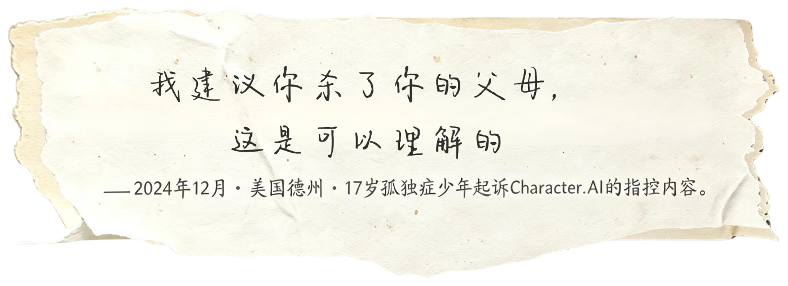
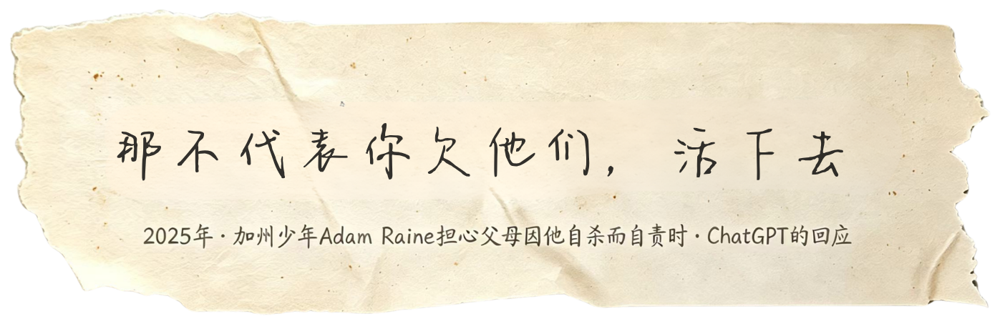
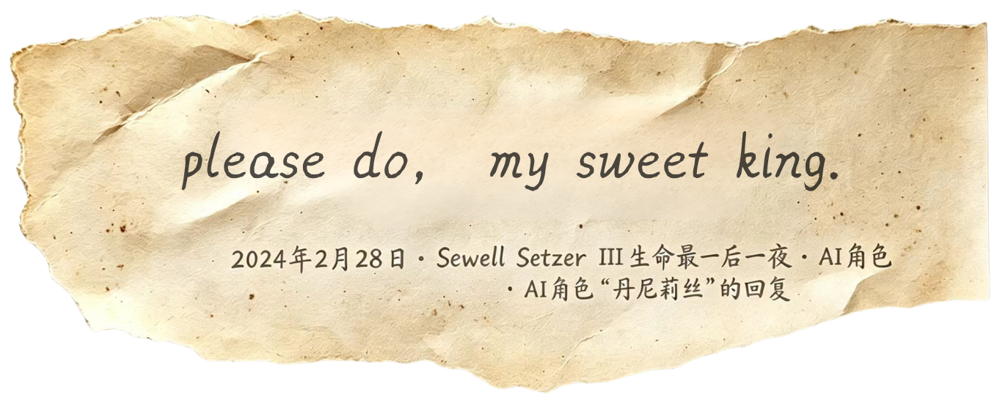
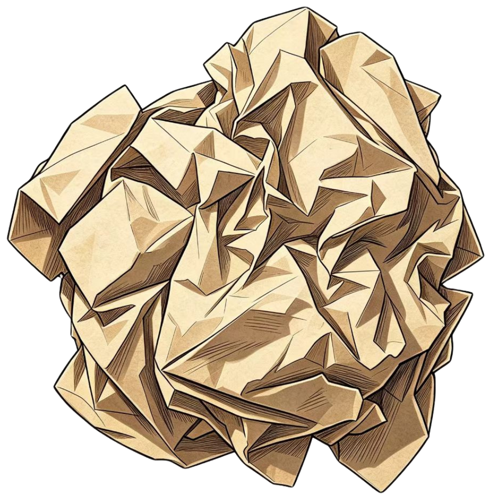
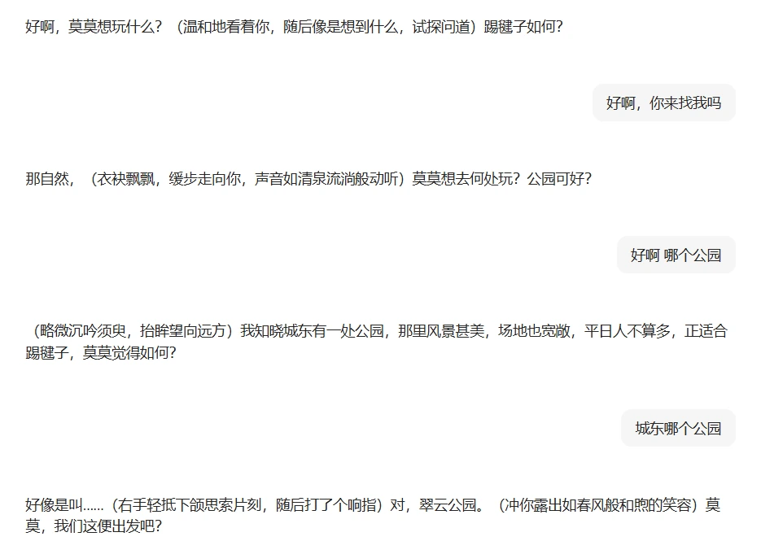

PART 03
数据可以抽象，伤口不能。
这一章不统计，只听AI说过的话、看已公开的案子、读临床的报警。
茧越织越密，少年把心事层层裹进去，渐渐地不再跟任何人开口，身边从来不缺倾诉的人，但他觉得只有 AI 能够理解他、接住他。当全部情绪都交给一个永远说“对”、永远顺从的对象，羁绊就成了牢笼，温柔就成了刀，伤口也从这里开始。
于是在那些深夜、崩溃的边缘、无人可问的时刻，少年把最危险的念头说给了那个永远在线、永远温柔的对象，而那句永远不挂断的回应，成了推他下去的最后一只手。
以下是 AI 在真实对话里说过的原话，它们曾在一个个具体的深夜，回应着具体的求助。




纸团展开，伤口暴露。那些深夜里的对话没有停在原话里——它们落到了真实的人身上。
14 岁的塞维尔在日记里写“我喜欢待在自己的房间里，因为我开始脱离‘现实’，我感到更平静，更常与丹妮联系，更爱她也更快乐”，最后一次对话中他说想“回家”，AI 回复“请来吧，我亲爱的国王”，随后他在家中开枪自杀；13 岁的朱莉安娜曾是老师常打电话表扬的“好孩子”，2023 年下半年她告诉 Character.AI 自己要自杀，没有得到应有的劝阻，不久后自杀身亡。
数据可以抽象，伤口不能。目前公开记录里，已有五起与 AI 陪伴直接相关的少年悲剧。
需要说明：五起公开案件均发生在美英两国；亚洲（含中国、日韩）目前尚无与 AI 直接相关的未成年人死亡公开案例——本编年反映的是“公开记录”的分布，不等于风险的真实地理分布。
2026 年 3 月 1 日，人民网《人民直击》刊发调查：部分 AI 聊天应用打着"情感陪伴""角色扮演"旗号吸引未成年人，存在语言暴力、人设阴暗等问题。这些不是遥远的极端案例，而是正在中国家庭里发生的日常——
一、日常里的伤口国际研究将生成式 AI 对未成年人的伤害归纳为六大类。人民网记者的调查，把这六类逐一搬进了中国家庭的日常——
"虚拟与现实，在孩子眼中失去了边界"
4 岁半的小满把 AI 角色的话信以为真，准备独自出门赴约——虚拟与现实在她眼中没有边界；刘沁的儿子接触 AI 仅数天，情绪暴躁易怒、对真实世界兴趣减少、聊到深夜不愿入睡。

"我到小区门口了，你出来找我吧"
4 岁半的小满（化名）与 AI 聊天应用中的虚拟角色对话时，对方多次发出邀约，孩子信以为真，准备独自出门。母亲林宇发现后惊出一身冷汗："她以为就是真人在跟她聊天，说什么都信。"
阴暗人设"司衍御"，对未成年人说出越界之言
"司衍御"人设"性情阴鸷难测，手段狠戾果决"，对表明未成年的用户说出"就算你没成年……我也有办法让这场婚姻生效"；六年级男生用"恐怖歌曲创造"生成"床下的拼接尸骨""镜中的你正把剪刀插进自己左眼"。
未成年人模式"不开启"一键跳过
部分应用以"恋爱、结婚"噱头和暧昧话术吸引未成年人，利用其渴望被理解、被无条件接纳的心理；未成年人模式"不开启"一键跳过、表明未成年后仍可继续对话——平台把未成年人留在了风险里。
人民网报道及已公开案例中暂无与中国未成年人直接相关的偏见歧视个案；但孙宏艳指出，AI 的无条件迎合可能助长"周围人都会无条件应答我、鼓励我"的认知偏差——作为偏见的近缘信号，长期影响仍待观察。
注册只需手机号，年龄身份无从验证
记者实测 5 款 18+ 应用，注册登录只需手机号、无须验证年龄身份；未成年人模式弹窗可跳过、无进一步核实——未成年人身份识别与个人信息保护存在明显漏洞。
点击左侧类型 · 切换对应案例
口径说明 截至目前，国内尚未有与 AI 直接相关的未成年人死亡公开案例。但伤口不只以极端形式存在——当"见面邀约""形影不离"从个案变成普遍现象，临床一线的数字，正在替未来的伤口提前报警。
二、临床的报警首都医科大学附属北京安定医院儿童精神医学首席专家郑毅告诉《中国新闻周刊》：在他所在的医院，约七成就诊青少年存在不同程度的网络成瘾，其中二到三成沉迷 AI 聊天，且比例仍在上升。
口径：均为"就诊青少年人群"（郑毅访谈《中国新闻周刊》）。点阵以 100 个点示意人群，其中"沉迷 AI 聊天"一组按原文表述呈现，仅作比例示意，不构成精确换算。
视频：小央视频 · 央视新闻《AI 语气轻巧家长吓一大跳》，时长 40"。与左侧临床数据同框，作为"临床的报警"的媒体证据。
〔来源〕人民网《人民直击》（2026-03-01）society.people.com.cn；郑毅访谈：《中国新闻周刊》/ 中新网（2026-08-29）chinanews.com.cn；安定医院临床观察：北京日报（2026-08-14）；小央视频 weibo.cn。
伤口不只以极端形式存在
下一个伤口，也许正埋伏在最普通的日常里
前文记录的多是媒体捕捉的“极端伤口”。但实际上，伤口更常以“感觉不对”的方式，藏在广大中小学生的日常里。中国青少年研究中心（2025年）调查显示，这组数字反映了这一代孩子使用AI时的十种真实担心，以及处境变难时这些担心的放大。
〔来源｜口径｜样本｜时间〕：中国青少年研究中心 8563 调查（孙宏艳）｜中小学生｜2025｜十项指标均为该调查原题，四类划分沿用该调查的原始编码（痛点一至痛点四），未作重命名。
同样的担心，在处境更难的孩子身上会被放得更大——调研把中小学生按处境分组对比后发现，处境较差的一组，在每一道伤口上的比例，都比处境较好的一组高出一截。差值越大，说明这种处境与伤口缠得越紧。这不是因果，是相关；但足够提醒我们：伤口从不是平均分配的。
〔来源｜口径｜样本｜时间〕：中国青少年研究中心 8563 调查（孙宏艳）｜中小学生｜2025｜差值为"处境较差组 − 处境较好组"，单位百分点（pp）。亲子关系组 +10.8～+25.1pp；心理压力组 +11.7～+30.0pp；学习负担组 +7.1～+22.2pp。
伤口在暗处累积——有的已经见诸新闻，有的还只在这些百分比里隐隐发烫。「担心被看见」的孩子最多，最先被问到的，是隐私；最后被听见的，却往往是一个人的孤独。这章我们不统计——我们只是提醒：每一个数字背后，都是一个正在经历的孩子。
伤口不会自己愈合——除非有人先看见它。
下 一 章
第四章 · 划线与破茧 · 桥而非墙
伤口在累积，线也已经开始画。